6.4 Volume By Shells¶
Guiding question
Section 6.3 cut a solid of revolution into thin disks or washers perpendicular to the axis. Here we cut the same solid in a second way, into thin cylindrical shells around the axis, like the walls of nested tin cans. A shell of radius \(r\), height \(h\) and thickness \(dr\) is a thin tube, and unrolled it is almost a flat slab of length \(2\pi r\), height \(h\) and thickness \(dr\), so its volume is \(2\pi r\,h\,dr\). The volume of the solid is the integral of these. Washers and shells give the same number for the same solid (both are proved from the same facts about volume), but one of them is often much easier. For the region under \(y=x^2-x^3\) revolved about the \(y\)-axis, shells give a one-line integral, while washers would need the roots of a cubic. The difficulties are again about distances: the radius of a shell is its distance from the axis, and its height is the length of a segment parallel to the axis. We prove the formulas, use them for the sphere and the torus as a cross-check on Section 6.3, and learn how to choose between shells and washers.
By the end of this section you should be able to:
-
describe a typical cylindrical shell by its radius, height and thickness, and say why its volume is \(2\pi r\,h\,dr\);
-
set up and evaluate the volume of a solid of revolution by the shell method about the \(y\)-axis, the \(x\)-axis, and any vertical or horizontal line, for a region under a curve or between two curves;
-
choose between shells and washers (or disks) and carry out the same problem both ways;
-
use shells for solids that have no easy description by disks, and find the volumes of the sphere and the torus by shells;
-
prove each of the theorems of this section.
A second way to cut a solid of revolution¶
Let \(R\) be the region under the graph of \(y=f(x)\) for \(a\le x\le b\), with \(0\le a<b\) and \(f\ge0\), and let \(S\) be the solid obtained by revolving \(R\) about the \(y\)-axis. A washer slice of Section 6.3 is perpendicular to the \(y\)-axis, so it needs \(x\) as a function of \(y\), which may be hard to get. Instead cut \(R\) into thin vertical strips of width \(dx\). The strip at \(x\) has height \(f(x)\) and is at distance \(x\) from the axis. Revolved about the \(y\)-axis, it sweeps out a thin cylindrical shell with
radius \(r=x\) (the distance to the axis), height \(h=f(x)\) (the length of the strip, parallel to the axis), thickness \(dx\).
Why is its volume about \(2\pi r\,h\,dr\)? Cut the shell along a vertical line and unroll it: it becomes a slab of length (the circumference) \(2\pi r\), height \(h\) and thickness \(dr\), and a slab has volume length \(\times\) height \(\times\) thickness. For a very thin shell the unrolling changes the volume very little; the next theorem shows that it changes it not at all if we use the mean radius. We use the same foundations as in Section 6.3: the three facts (V1) (volume from cross-sectional area), (V2) (volumes of pieces add, and a piece never has a larger volume than the whole, because volumes are not negative) and (V3) (congruent solids have the same volume). They are taken as the meaning of volume and are not proved here.
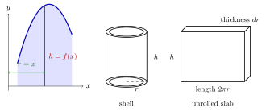
Figure. A strip of height \(h=f(x)\) at distance \(r=x\) from the \(y\)-axis, the thin shell it sweeps out, and the slab obtained by cutting and unrolling the shell.
Theorem 6.4.1: The volume of a cylindrical shell
Let \(0\le r_1<r_2\) and \(h\ge0\). The shell (tube) of inner radius \(r_1\), outer radius \(r_2\) and height \(h\) is the solid of points \((X,Y,Z)\) with \(r_1\le\sqrt{X^2+Z^2}\le r_2\) and \(y_0\le Y\le y_0+h\). Its volume is
that is, \(2\pi\times\)(mean radius)\(\times\)(height)\(\times\)(thickness).
Proof. The plane perpendicular to the \(y\)-axis at height \(Y\), with \(y_0\le Y\le y_0+h\), cuts the tube in a ring: the disk of radius \(r_2\) with the open disk of radius \(r_1\) removed. A disk of radius \(r\) has area \(\pi r^2\) (Calculus I), so by (V2) in the plane the ring has area \(\pi r_2^2-\pi r_1^2\), the same for every \(Y\). By Theorem 6.3.2 (slicing along the \(y\)-axis), \(V=\int_{y_0}^{y_0+h}\pi(r_2^2-r_1^2)\,dY=\pi(r_2^2-r_1^2)h\). Finally \(r_2^2-r_1^2=(r_2+r_1)(r_2-r_1)\), and \(\pi(r_2+r_1)=2\pi\cdot\frac{r_1+r_2}2\). (For instance \(r_1=2\), \(r_2=3\), \(h=4\): \(\pi(9-4)\cdot4=20\pi\), and \(2\pi\cdot2.5\cdot4\cdot1=20\pi\).) ◻ ∎
Knowledge Check 6.4.1: A thin shell
A shell has radius \(3\), height \(5\) and thickness \(0.01\). Use \(2\pi r\,h\,dr\) to estimate its volume, and compare with Theorem 6.4.1 for inner radius \(2.995\) and outer radius \(3.005\).
Pause and think 6.4.1: Why \(2\pi x\) and not just \(x\)?
Two strips of the same height and the same width are revolved about the \(y\)-axis, one at \(x=1\) and one at \(x=10\). Which sweeps out the larger shell, and by what factor? What does that say about the factor \(x\) in the integrand of the shell method?
Answer and discussion
Same height and width, so the shell at \(x=10\) is ten times as long around (\(2\pi\cdot10\) against \(2\pi\cdot1\)) and has ten times the volume. A strip far from the axis sweeps more material, so each strip must be weighted by its distance \(x\) from the axis; without the factor \(x\) the integral \(\int_a^bf\,dx\) would be just the area.
The shell method about the \(y\)-axis¶
The strips add up to the whole solid. We state the formula for a region between two curves, which includes the region under one curve (\(g=0\)).
Theorem 6.4.2: The shell method about the \(y\)-axis
Let \(0\le a<b\), let \(f\) and \(g\) be continuous on \([a,b]\) with \(g\le f\), let \(R\) be the region between their graphs for \(a\le x\le b\), and let \(S\) be the solid obtained by revolving \(R\) about the \(y\)-axis. Then
the integral of (circumference \(2\pi x\)) \(\times\) (height \(f-g\), top minus bottom) \(\times\) (thickness \(dx\)). In particular, if \(g=0\) and \(f\ge0\) then \(V=2\pi\int_a^bx\,f(x)\,dx\).
Proof. Step 1: the region under one curve. Let \(g=0\) and \(f\ge0\). Write \(\rho=\sqrt{X^2+Z^2}\) for the distance from the \(y\)-axis; then \(S=\{a\le\rho\le b,\ 0\le Y\le f(\rho)\}\). For \(a\le x\le b\) let \(V(x)\) be the volume of the part \(S_x\) of \(S\) with \(\rho\le x\) (the solid made by the part of \(R\) over \([a,x]\)), so \(V(a)=0\) and \(V(b)\) is the volume we want.
Take \(x<b\) and \(h>0\) with \(x+h\le b\). Let \(m\) and \(M\) be the least and greatest values of \(f\) on \([x,x+h]\). The part of \(S\) with \(x\le\rho\le x+h\) is \(P=\{x\le\rho\le x+h,\ 0\le Y\le f(\rho)\}\). It contains the shell \(T_m=\{x\le\rho\le x+h,\ 0\le Y\le m\}\) and lies inside the shell \(T_M=\{x\le\rho\le x+h,\ 0\le Y\le M\}\). The solids \(S_x\) and \(P\) overlap only along the cylinder \(\rho=x\) and together make \(S_{x+h}\), so \(V(x+h)-V(x)=\operatorname{vol}(P)\) by (V2); and by (V2) again \(\operatorname{vol}(T_m)\le\operatorname{vol}(P)\le\operatorname{vol}(T_M)\). Theorem 6.4.1 gives \(\operatorname{vol}(T_m)=\pi\bigl((x+h)^2-x^2\bigr)m=\pi h(2x+h)m\), and likewise for \(T_M\). Hence
As \(h\to0^+\) both \(m\) and \(M\) tend to \(f(x)\), because \(f\) is continuous, so the right derivative of \(V\) at \(x\) is \(2\pi x\,f(x)\). The same argument on \([x-h,x]\) (shells of radii \(x-h\) and \(x\), volume factor \(\pi h(2x-h)\)) gives the left derivative, the same number. So \(V'(x)=2\pi x\,f(x)\) for \(a\le x\le b\) (one-sided at the ends), a continuous function. By the net change theorem (Theorem 6.1.14, which is the Fundamental Theorem of Calculus), \(V(b)=V(b)-V(a)=\int_a^b2\pi x\,f(x)\,dx\).
Step 2: two curves. The function \(g\) is continuous, hence bounded below on \([a,b]\), so there is a constant \(c\) with \(g+c\ge0\). The translation \((X,Y,Z)\mapsto(X,Y+c,Z)\) is a rigid motion, so by (V3) the solid for \(f,g\) has the same volume as the solid for \(f+c,\ g+c\), and \((f+c)-(g+c)=f-g\). So we may assume \(g\ge0\). Let \(U_f\) and \(U_g\) be the solids from the regions under \(f\) and under \(g\). Then \(U_f\) is made of \(U_g\) and \(S\), which overlap only along the surface \(Y=g(\rho)\), so \(\operatorname{vol}(S)=\operatorname{vol}(U_f)-\operatorname{vol}(U_g)=2\pi\int_a^bxf\,dx-2\pi\int_a^bxg\,dx\) by Step 1, which is \(2\pi\int_a^bx(f-g)\,dx\). (For instance \(f=2\) and \(g=1\) on \([0,1]\) give \(2\pi\int_0^1x\,dx=\pi\): a cylinder of radius \(1\) and height \(1\).) ◻ ∎
Procedure 6.4.3: The shell method
-
Sketch the region and the axis of revolution.
-
Draw one typical segment of the region parallel to the axis. Its length is the shell height \(h\); its distance from the axis is the shell radius \(r\).
-
The variable of integration is the one across the segments, perpendicular to the axis: \(x\) for a vertical axis, \(y\) for a horizontal axis. Write the boundary curves in that variable (for a horizontal axis, \(x\) as a function of \(y\), as in Section 6.2) and find the limits.
-
Integrate \(2\pi\,r\,h\) with respect to that variable, and test the answer for plausibility.
The factor is the circumference not the radius
The integrand is \(2\pi\cdot r\cdot h\): the circumference \(2\pi r\) times the height, not \(\pi r^2\) (that is a disk) and not \(2\pi h\). And \(r\) is the distance to the axis, which equals \(x\) only when the axis is the \(y\)-axis (Theorem 6.4.9 below).
Knowledge Check 6.4.2: A shell integral
The region under \(y=x^2\) for \(0\le x\le1\) is revolved about the \(y\)-axis. Write the radius and the height of a typical shell and evaluate the volume by shells.
Example 6.4.4: A dome: the region under a parabola
Let \(R\) be the region in the first quadrant under \(y=4-x^2\) (between the axes and the curve). Find the volume of the solid obtained by revolving \(R\) about the \(y\)-axis.
Solution. Set-up. The curve meets the axes at \((2,0)\) and \((0,4)\), so \(0\le x\le2\). A vertical strip at \(x\) is parallel to the axis; its distance from the axis is the radius \(r=x\) and its length is the height \(h=4-x^2\) (top \(y=4-x^2\) minus bottom \(y=0\)). Integral. By Theorem 6.4.2,
(The bracket is checked by differentiating: \(\frac{d}{dx}\bigl(2x^2-\frac{x^4}4\bigr)=4x-x^3\).)
Check by washers. The solid is a paraboloid dome. Slicing by \(y\) (Section 6.3) gives disks of radius \(\sqrt{4-y}\), so \(V=\pi\int_0^4(4-y)\,dy=\pi\bigl[4y-\frac{y^2}2\bigr]_0^4=8\pi\), the same, and half of the cylinder of radius \(2\) and height \(4\) (\(16\pi\)).
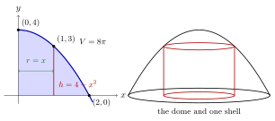
Figure. The region (shaded) with a typical strip at \(x=1\) (red), at distance \(r=1\) from the axis with height \(h=4-1=3\). Revolved, the strip is the red shell in the picture of the dome (right).
Example 6.4.5: A shell integral that needs a substitution
Let \(R\) be the region under \(y=\dfrac1{\sqrt{x^2+1}}\) for \(0\le x\le2\sqrt2\). Find the volume of the solid obtained by revolving \(R\) about the \(y\)-axis.
Solution. A vertical strip at \(x\) has radius \(r=x\) and height \(h=\dfrac1{\sqrt{x^2+1}}\), so by Theorem 6.4.2
Substitution. Let \(u=x^2+1\), so \(du=2x\,dx\) and \(x\,dx=\frac12\,du\). When \(x=0\), \(u=1\); when \(x=2\sqrt2\), \(u=8+1=9\). Then
Check. The height decreases from \(1\) at \(x=0\) to \(\frac13\) at \(x=2\sqrt2\), so the solid lies inside the cylinder of radius \(2\sqrt2\) and height \(1\), of volume \(\pi\cdot8\cdot1=8\pi\), and contains the cylinder of radius \(2\sqrt2\) and height \(\frac13\), of volume \(\frac{8\pi}3\); \(\frac{8\pi}3<4\pi<8\pi\).
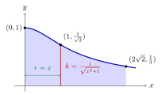
Figure. The region under \(y=1/\sqrt{x^2+1}\) on \([0,2\sqrt2]\). The strip at \(x=1\) (red) has radius \(1\) and height \(1/\sqrt2\).
Shells about the \(x\)-axis¶
When the axis is the \(x\)-axis the strips must be parallel to it, so they are horizontal, the variable of integration is \(y\) and the curves are written as \(x=p(y)\) (right) and \(x=q(y)\) (left), as in Section 6.2. The formula is Theorem 6.4.2 with the roles of \(x\) and \(y\) exchanged.
Theorem 6.4.6: The shell method about the \(x\)-axis
Let \(0\le c<d\), let \(p\ge q\) be continuous on \([c,d]\) and let \(R\) be the region between \(x=q(y)\) and \(x=p(y)\) for \(c\le y\le d\) (right minus left). The solid obtained by revolving \(R\) about the \(x\)-axis has volume
a shell of radius \(y\) and height \(p-q\) (the length of a horizontal strip) and thickness \(dy\).
Proof. The solid is \(S=\{c\le\sqrt{Y^2+Z^2}\le d,\ q(\sqrt{Y^2+Z^2})\le X\le p(\sqrt{Y^2+Z^2})\}\). Let \(\sigma(X,Y,Z)=(Y,X,Z)\) be the reflection in the plane \(x=y\), a rigid motion. Then \(\sigma(S)=\{c\le\sqrt{u^2+z^2}\le d,\ q(\sqrt{u^2+z^2})\le v\le p(\sqrt{u^2+z^2})\}\) in the coordinates \((u,v,z)\), and this is the solid obtained by revolving about the \(v\)-axis the region between the graphs \(v=q(u)\) and \(v=p(u)\) for \(c\le u\le d\). By Theorem 6.4.2 its volume is \(2\pi\int_c^du\,(p(u)-q(u))\,du\), and by (V3) this is the volume of \(S\). (For instance \(p=2\) and \(q=1\) on \([0,1]\) give \(2\pi\int_0^1y\,dy=\pi\).) ◻ ∎
Example 6.4.7: Shells about the \(x\)-axis: a region beside a cube root
Let \(R\) be the region in the first quadrant bounded by the \(y\)-axis, the line \(y=2\) and the curve \(y=\sqrt[3]x\). Find the volume of the solid obtained by revolving \(R\) about the \(x\)-axis.
Solution. Set-up. The axis is horizontal, so we use horizontal strips and integrate with respect to \(y\). Solving \(y=\sqrt[3]x\) for \(x\) gives \(x=y^3\). At height \(y\), with \(0\le y\le2\), the region runs from the \(y\)-axis (\(x=0\)) to the curve (\(x=y^3\)), so the strip has length \(h=y^3-0=y^3\), and its distance from the \(x\)-axis is \(r=y\). Integral. \(V=2\pi\int_0^2y\cdot y^3\,dy=2\pi\int_0^2y^4\,dy=2\pi\Bigl[\frac{y^5}5\Bigr]_0^2=2\pi\cdot\frac{32}5=\frac{64\pi}5\approx40.21 .\)
Check by washers. Slicing perpendicular to the \(x\)-axis, for \(0\le x\le8\) the outer radius is \(2\) and the inner radius is \(\sqrt[3]x\), so \(V=\pi\int_0^8\bigl(4-x^{2/3}\bigr)dx=\pi\bigl[4x-\frac35x^{5/3}\bigr]_0^8=\pi\bigl(32-\frac{96}5\bigr)=\frac{64\pi}5\). The two methods agree.
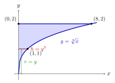
Figure. The region left of the curve \(y=\sqrt[3]x\) and below \(y=2\). The red strip at height \(y=1\) runs from the \(y\)-axis to \(x=y^3=1\); its distance from the axis of revolution (the \(x\)-axis) is \(r=1\).
Example 6.4.8: Two curves: the region between a line and a parabola
Let \(R\) be the region in the first quadrant between \(y=x^2\) and \(y=6-x\), to the right of the \(y\)-axis. Find the volume of the solid obtained by revolving \(R\) about the \(y\)-axis.
Solution. Intersection. \(x^2=6-x\) gives \(x^2+x-6=(x+3)(x-2)=0\), so \(x=2\) in the first quadrant, at the point \((2,4)\). For \(0\le x\le2\) the line is above the parabola (at \(x=1\): \(5>1\)), so the strip at \(x\) has height \(h=(6-x)-x^2\) and radius \(r=x\). Integral. By Theorem 6.4.2,
Why shells. With washers we would slice by \(y\). For \(0\le y\le4\) the region runs from the axis to the parabola (\(x=\sqrt y\)), but for \(4\le y\le6\) it runs from the axis to the line (\(x=6-y\)), so two integrals are needed: \(\pi\int_0^4y\,dy+\pi\int_4^6(6-y)^2dy=8\pi+\frac{8\pi}3=\frac{32\pi}3\), the same. The shells need one integral.
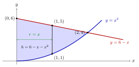
Figure. The region between the parabola and the line, with the strip at \(x=1\) from \((1,1)\) up to \((1,5)\): height \(h=5-1=4\) and radius \(r=1\).
Shells about other vertical and horizontal lines¶
As with washers, the axis need not be a coordinate axis. The only change is that the radius of a shell is its distance from the axis. Call the axis \(x=k\) (vertical) or \(y=k\) (horizontal), as in Section 6.3, and assume the region lies on one side of it.
Theorem 6.4.9: Shells about other lines
(1) Vertical axis \(x=k\). Let \(f\ge g\) be continuous on \([a,b]\) and let \(R\) be the region between their graphs. If the axis is to the left of \(R\) (\(k\le a\)), the volume of the solid obtained by revolving \(R\) about \(x=k\) is \(V=2\pi\int_a^b(x-k)\,(f-g)\,dx\). If the axis is to the right of \(R\) (\(k\ge b\)), it is \(V=2\pi\int_a^b(k-x)\,(f-g)\,dx\).
(2) Horizontal axis \(y=k\). Let \(p\ge q\) be continuous on \([c,d]\) and let \(R\) be the region between \(x=q(y)\) and \(x=p(y)\). If the axis is below \(R\) (\(k\le c\)), \(V=2\pi\int_c^d(y-k)\,(p-q)\,dy\); if it is above \(R\) (\(k\ge d\)), \(V=2\pi\int_c^d(k-y)\,(p-q)\,dy\).
In words: the radius is the distance from the strip to the axis, and the height is the length of the strip (parallel to the axis).
Proof. (1) Let \(k\le a\). The translation \((X,Y,Z)\mapsto(X-k,Y,Z)\) carries the axis \(x=k\) onto the \(y\)-axis and \(R\) onto the region between the graphs of \(u\mapsto f(u+k)\) and \(u\mapsto g(u+k)\) for \(a-k\le u\le b-k\), where \(a-k\ge0\). By (V3) and Theorem 6.4.2 the volume is \(2\pi\int_{a-k}^{b-k}u\bigl(f(u+k)-g(u+k)\bigr)du\), and the substitution \(x=u+k\) turns this into \(2\pi\int_a^b(x-k)(f-g)\,dx\). Now let \(k\ge b\). The reflection \((X,Y,Z)\mapsto(2k-X,Y,Z)\) in the plane \(X=k\) fixes the axis and carries \(R\) onto the region between the graphs of \(u\mapsto f(2k-u)\) and \(u\mapsto g(2k-u)\) over \(2k-b\le u\le2k-a\), which lies to the right of \(x=k\) (since \(2k-b\ge k\)). By the first case and (V3), \(V=2\pi\int_{2k-b}^{2k-a}(u-k)\bigl(f(2k-u)-g(2k-u)\bigr)du\), and the substitution \(x=2k-u\) (so \(u-k=k-x\) and the limits become \(b\) and \(a\), with \(du=-dx\)) gives \(2\pi\int_a^b(k-x)(f-g)\,dx\).
(2) The reflection \(\sigma(X,Y,Z)=(Y,X,Z)\) carries the axis \(y=k\) (with \(Z=0\)) onto the axis \(x=k\) (with \(Z=0\)) and the region between \(x=q(y)\) and \(x=p(y)\) onto the region between the graphs of \(q\le p\) with \(u\) as the horizontal variable. Apply part (1) with \(f=p\), \(g=q\), and (V3). (For instance \(f=2\), \(g=1\) on \([0,1]\) about \(x=-1\): \(2\pi\int_0^1(x+1)\,dx=3\pi\), a cylinder of radius \(2\) with a hole of radius \(1\), height \(1\).) ◻ ∎
Knowledge Check 6.4.3: Which radius?
The region under \(y=x\) for \(1\le x\le3\) is revolved about the line \(x=5\). Write the radius and the height of a typical shell, and evaluate the volume.
Pause and think 6.4.2: A region on both sides of the axis
The region under \(y=1-x^2\) for \(-1\le x\le1\) is revolved about the \(y\)-axis. What does the integral \(2\pi\int_{-1}^1x(1-x^2)\,dx\) give? Why is this not the volume, and what is the volume? Compare with the hypothesis \(0\le a<b\) of Theorem 6.4.2.
Answer and discussion
The integrand \(x(1-x^2)\) is odd, so the integral is \(0\): it counts the left half as negative. Volume is never negative, and the left half of the region sweeps out the same solid as the right half, so it must not be counted again. The volume is \(2\pi\int_0^1x(1-x^2)\,dx=2\pi\bigl(\frac12-\frac14\bigr)=\frac\pi2\) (a paraboloid-shaped bowl of height \(1\) and radius \(1\)). The hypothesis \(0\le a<b\) rules out regions that cross the axis.
Example 6.4.10: The same region about two vertical lines
Let \(R\) be the region under \(y=x^2\) for \(0\le x\le1\). Find the volume of the solid obtained by revolving \(R\) (a) about the line \(x=-1\) and (b) about the line \(x=2\).
Solution. The axes are vertical, so the strips are vertical, \(h=x^2\) and we integrate in \(x\).
(a) Axis \(x=-1\). The axis is to the left of \(R\) (\(k=-1\le a=0\)), so the radius is \(r=x-(-1)=x+1\):
(b) Axis \(x=2\). The axis is to the right of \(R\) (\(k=2\ge b=1\)), so the radius is \(r=2-x\):
Check. The two radii add to \((x+1)+(2-x)=3\), so \(V_a+V_b=2\pi\cdot3\int_0^1x^2\,dx=2\pi\); indeed \(\frac{7\pi}6+\frac{5\pi}6=2\pi\). Also \(V_a>V_b\), as it should: most of the region lies near \(x=1\), which is \(2\) from the first axis but only \(1\) from the second.
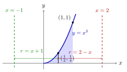
Figure. The region under \(y=x^2\) with the two axes. The strip at \(x=\frac12\) (height \(h=\frac14\)) is at distance \(\frac12+1=\frac32\) from \(x=-1\) (green arrow) and \(2-\frac12=\frac32\) from \(x=2\) (red arrow); at \(x=\frac12\) the two radii happen to be equal, but they differ everywhere else.
Example 6.4.11: The same region about two horizontal lines
Let \(R\) be the region between \(x=y^2\) and \(x=2y\). Find the volume of the solid obtained by revolving \(R\) (a) about the line \(y=-1\) and (b) about the line \(y=4\).
Solution. Region. The curves meet where \(y^2=2y\), so \(y=0\) or \(y=2\), at \((0,0)\) and \((4,2)\). At \(y=1\) the line has \(x=2\) and the parabola \(x=1\), so the line is the right curve \(p(y)=2y\) and the parabola the left curve \(q(y)=y^2\): the strip at height \(y\) is horizontal, parallel to the axes, of length \(h=2y-y^2\) (\(0\le y\le2\)).
(a) Axis \(y=-1\) (below \(R\), \(k=-1\le c=0\)): the radius is \(y-(-1)=y+1\).
(b) Axis \(y=4\) (above \(R\), \(k=4\ge d=2\)): the radius is \(4-y\).
Check of (a) by washers. For the horizontal axis the washers are perpendicular to it, so they are indexed by \(x\): for \(0\le x\le4\) the region lies between \(y=\frac x2\) (below) and \(y=\sqrt x\) (above), so about \(y=-1\) the outer radius is \(\sqrt x+1\) and the inner radius is \(\frac x2+1\), and \(V_a=\pi\int_0^4\Bigl((\sqrt x+1)^2-\bigl(\frac x2+1\bigr)^2\Bigr)dx=\pi\int_0^4\bigl(2\sqrt x-\frac{x^2}4\bigr)dx=\pi\bigl(\frac{32}3-\frac{16}3\bigr)=\frac{16\pi}3\). The solid in (b) is larger because its axis is farther from most of the region.
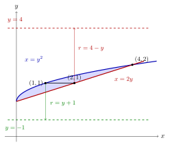
Figure. The region between \(x=y^2\) and \(x=2y\). The strip at \(y=1\) runs from \((1,1)\) to \((2,1)\), length \(h=2-1=1\); it is \(y+1=2\) above the axis \(y=-1\) (green) and \(4-y=3\) below the axis \(y=4\) (red).
Shells or washers?¶
Washers and shells describe the same solid, and by (V1) to (V3) the volume is one number, so the two integrals always agree (Examples 6.4.4, 6.4.7, 6.4.8 and 6.4.11 checked this). The choice is only about which integral is easier. The key is the direction of the strips. A strip perpendicular to the axis gives a disk or washer (Section 6.3); a strip parallel to the axis gives a shell. The variable of integration is the coordinate along which the strips are stacked.
| Axis | Washers (strips perpendicular to the axis) | Shells (strips parallel to the axis) |
|---|---|---|
| \(x\)-axis or \(y=k\) | integrate \(dx\); curves \(y=f(x)\) | integrate \(dy\); curves \(x=p(y)\) |
| \(y\)-axis or \(x=k\) | integrate \(dy\); curves \(x=p(y)\) | integrate \(dx\); curves \(y=f(x)\) |
Procedure 6.4.12: Choosing the method
-
Look at how the region is given. If the boundary curves are functions of the variable that stacks the strips in one method, choose that method: with curves \(y=f(x)\) and a vertical axis, use shells (\(dx\)); with curves \(y=f(x)\) and a horizontal axis, use washers (\(dx\)).
-
Avoid solving for an inverse function if you can (a cubic such as \(y=x^2-x^3\) has no simple inverse), and avoid methods that split the region into pieces.
-
If both methods are possible and neither is clearly better, do one and check with the other.
Example 6.4.13: One region, both axes, both methods
Let \(R\) be the region under \(y=2x-x^2\) for \(0\le x\le2\). Find the volume of the solid obtained by revolving \(R\) about (a) the \(x\)-axis and (b) the \(y\)-axis, each by washers and by shells, and compare the work.
Solution. The parabola \(y=x(2-x)\) meets the \(x\)-axis at \(x=0,2\) and has its vertex at \((1,1)\).
(a) About the \(x\)-axis, washers. The strips are vertical (perpendicular to the axis); the region touches the axis, so they are disks of radius \(2x-x^2\):
About the \(x\)-axis, shells. The strips are now horizontal, so we need \(x\) as a function of \(y\) for \(0\le y\le1\). From \(y=2x-x^2\) we get \(x^2-2x+y=0\), so \(x=1\pm\sqrt{1-y}\) (the quadratic formula). The strip at height \(y\) runs from \(1-\sqrt{1-y}\) to \(1+\sqrt{1-y}\), so \(h=2\sqrt{1-y}\) and \(r=y\):
Substitute \(u=1-y\), so \(y=1-u\) and \(dy=-du\); \(y=0\) gives \(u=1\) and \(y=1\) gives \(u=0\), and the minus sign reverses the limits:
so \(V=4\pi\cdot\frac4{15}=\frac{16\pi}{15}\), the same. Washers were shorter here: no inverse function and no substitution.
(b) About the \(y\)-axis, shells. The strips are vertical (parallel to the axis), \(r=x\) and \(h=2x-x^2\):
About the \(y\)-axis, washers. The strips are horizontal, indexed by \(y\in[0,1]\). With \(s=\sqrt{1-y}\) the region runs from \(x=1-s\) to \(x=1+s\), so it does not touch the axis and the solid has a hole: outer radius \(1+s\), inner radius \(1-s\), and \((1+s)^2-(1-s)^2=4s\):
the same again. Shells were shorter here.
Summary. About the \(x\)-axis the region is described by \(y=f(x)\) and washers need only \(f\); about the \(y\)-axis it is shells that need only \(f\). In each case the method whose strips are stacked in \(x\) was easier.
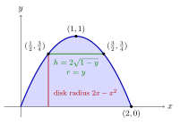
Figure. The region under \(y=2x-x^2\). The red vertical strip at \(x=\frac12\) is perpendicular to the \(x\)-axis (a disk of radius \(\frac34\)); the green horizontal strip at \(y=\frac34\) is parallel to it (a shell of radius \(\frac34\) and height \(\frac32-\frac12=1\)).
Pause and think 6.4.3: Disks or shells for \(y=x^2\)?
The region under \(y=x^2\) for \(0\le x\le2\) is revolved about the \(x\)-axis. Which method is easier, disks or shells, and why? Set up both integrals and check that they give the same number.
Answer and discussion
Disks are easier: the curve is \(y=x^2\) and the axis is horizontal, so \(V=\pi\int_0^2x^4dx=\frac{32\pi}5\). Shells need the inverse \(x=\sqrt y\) and the strip \(h=2-\sqrt y\) with \(r=y\) for \(0\le y\le4\): \(V=2\pi\int_0^4(2y-y^{3/2})dy=2\pi\bigl(16-\frac{64}5\bigr)=\frac{32\pi}5\). Same number, but a harder integral.
Solids with no easy description by disks¶
Sometimes the washer method is not just longer but practically impossible, because the boundary curve cannot be solved for the other variable in a usable way.
Example 6.4.14: A cubic curve about the \(y\)-axis
Let \(R\) be the region in the first quadrant under \(y=x^2-x^3\) (between the curve and the \(x\)-axis). Find the volume of the solid obtained by revolving \(R\) about the \(y\)-axis.
Solution. The region. \(x^2-x^3=x^2(1-x)\) is \(\ge0\) exactly for \(0\le x\le1\) and is zero at \(x=0,1\). Its derivative \(2x-3x^2=x(2-3x)\) vanishes at \(x=\frac23\), where \(y=\frac49-\frac8{27}=\frac4{27}\): the curve rises to a maximum \(\frac4{27}\) and falls back to zero. Why not washers. At height \(y\) between \(0\) and \(\frac4{27}\) the region lies between the two solutions of \(x^2-x^3=y\) in \((0,1)\), the roots of a cubic that has no simple formula, and the radii would be those roots.
Shells. The strip at \(x\) is vertical, parallel to the axis: \(r=x\) and \(h=x^2-x^3\). By Theorem 6.4.2,
Check. The solid lies inside the cylinder of radius \(1\) and height \(\frac4{27}\), of volume \(\frac{4\pi}{27}\approx0.465\), and \(0.314<0.465\). It is a ring with a dimple in the middle, because the height is \(0\) at the axis.
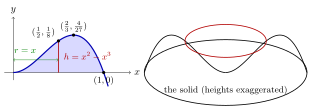
Figure. The region under \(y=x^2-x^3\) with the strip at \(x=\frac12\) (height \(\frac18\)), and the ring-shaped solid it generates; the red circle is the shell of that strip.
The ball and the torus by shells¶
Section 6.3 found the volume of the ball by disks (Theorem 6.3.18). Shells give it again, and also the volume of a torus (a doughnut), which is not available from the sphere formula. Both checks use only Theorem 6.4.2.
Theorem 6.4.15: The ball and the torus
(1) A ball of radius \(r\) has volume \(\frac43\pi r^3\).
(2) Let \(0<a<R\). The torus obtained by revolving the disk of radius \(a\) centred at \((R,0)\) about the \(y\)-axis has volume \(V=2\pi^2Ra^2\): the area \(\pi a^2\) of the disk times the length \(2\pi R\) of the circle that its centre travels.
Proof. (1) The ball is the solid obtained by revolving the half-disk \(0\le x\le r\), \(-\sqrt{r^2-x^2}\le y\le\sqrt{r^2-x^2}\) about the \(y\)-axis (it is the set \(\rho^2+Y^2\le r^2\)). The strip at \(x\) has radius \(x\) and height \(2\sqrt{r^2-x^2}\), so by Theorem 6.4.2
Substitute \(u=r^2-x^2\), \(du=-2x\,dx\); \(x=0\) gives \(u=r^2\) and \(x=r\) gives \(u=0\), so \(V=2\pi\int_0^{r^2}\sqrt u\,du=2\pi\cdot\frac23\bigl(r^2\bigr)^{3/2}=\frac43\pi r^3\) (as \(r>0\)). This agrees with Theorem 6.3.18(4). (For \(r=3\): \(\frac43\pi\cdot27=36\pi\).)
(2) The circle \((x-R)^2+y^2=a^2\) bounds the disk; for \(R-a\le x\le R+a\) the disk lies between \(y=-\sqrt{a^2-(x-R)^2}\) and \(y=\sqrt{a^2-(x-R)^2}\), and \(R-a>0\), so the disk is to the right of the axis. By Theorem 6.4.2
Split the integrand: \(u\sqrt{a^2-u^2}\) is an odd function, so its integral over \([-a,a]\) is \(0\) (Theorem 6.2.8); and \(\int_{-a}^a\sqrt{a^2-u^2}\,du\) is the area of the half-disk under \(v=\sqrt{a^2-u^2}\), which is \(\frac12\pi a^2\). Hence \(V=4\pi R\cdot\frac12\pi a^2=2\pi^2Ra^2\). (For \(R=3\), \(a=2\): \(2\pi^2\cdot3\cdot4=24\pi^2\approx236.9\).) ◻ ∎
The torus by washers
Washers about the \(y\)-axis (Theorem 6.3.11) give \(\pi\int_{-a}^a\bigl((R+\sqrt{a^2-y^2})^2-(R-\sqrt{a^2-y^2})^2\bigr)dy=4\pi R\int_{-a}^a\sqrt{a^2-y^2}\,dy\), the same integral, so the two methods agree. Here shells and washers are equally easy; the point of the theorem is that the same result comes from either description.
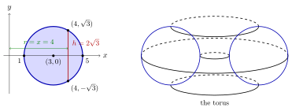
Figure. Left: the disk of radius \(a=2\) centred at \((R,0)=(3,0)\) with the strip at \(x=4\) (radius \(4\), height \(2\sqrt{4-1}=2\sqrt3\)). Right: the torus it generates (the circle is its cross section).
Example 6.4.16: A drilled ball
A cylindrical hole of radius \(3\) is drilled through the centre of a ball of radius \(5\). Find the volume of the material that remains, and check it with the formulas of Section 6.3.
Solution. Take the axis of the hole as the \(y\)-axis. The remaining solid is made by revolving about the \(y\)-axis the part of the half-disk with \(3\le x\le5\) (the part of the ball at a distance between \(3\) and \(5\) from the axis), which lies between \(y=-\sqrt{25-x^2}\) and \(y=\sqrt{25-x^2}\). A strip at \(x\) has radius \(x\) and height \(2\sqrt{25-x^2}\), so
Substitution. \(u=25-x^2\), \(du=-2x\,dx\), so \(x\,dx=-\frac12du\). At \(x=3\), \(u=16\); at \(x=5\), \(u=0\). The minus sign reverses the limits:
Check with Section 6.3. The hole is a cylinder of radius \(3\) and length \(2\sqrt{25-9}=8\), with volume \(\pi\cdot9\cdot8=72\pi\); and the ball sticks out of the cylinder at each end in a cap of height \(5-4=1\), of volume \(\frac13\pi h^2(3\cdot5-h)=\frac{14\pi}3\) (Theorem 6.3.18(3)). The material removed is \(72\pi+2\cdot\frac{14\pi}3\), so what remains is \(\frac43\pi\cdot125-72\pi-\frac{28\pi}3=\frac{500\pi-216\pi-28\pi}3=\frac{256\pi}3\), the same.
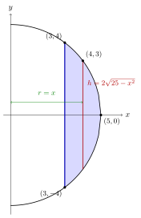
Figure. The part of the half-disk of radius \(5\) with \(x\ge3\) (shaded). The line \(x=3\) meets the circle at \((3,\pm4)\), so the hole has length \(8\). The red strip at \(x=4\) runs from \((4,-3)\) to \((4,3)\) and has radius \(4\) and height \(6\).
Example 6.4.17: A bell that needs shells
Let \(R\) be the region under \(y=e^{-x^2}\) for \(0\le x\le b\). Find the volume of the solid obtained by revolving \(R\) about the \(y\)-axis, and evaluate it for \(b=1\).
Solution. The strip at \(x\) has radius \(x\) and height \(e^{-x^2}\), so \(V=2\pi\int_0^bx\,e^{-x^2}\,dx\). Substitution. \(u=-x^2\), \(du=-2x\,dx\), so \(x\,dx=-\frac12du\); \(x=0\) gives \(u=0\) and \(x=b\) gives \(u=-b^2\):
For \(b=1\) this is \(\pi(1-e^{-1})\approx1.986\). Since \(e^{-b^2}>0\), \(V(b)<\pi\) for every \(b\), and \(V(b)\) increases towards \(\pi\) as \(b\) grows: the whole bell, which is infinitely wide, has a finite volume. (A later section on improper integrals gives the precise meaning of this limit.)
Why shells. The washer method slices by \(y\): at height \(y\) the radius is \(x=\sqrt{-\ln y}\), and the volume integral contains \(\int\ln y\,dy\), which cannot be found with the methods available so far (it needs a technique from a later chapter). The shell integral needs only the substitution above.
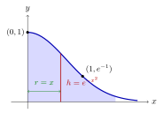
Figure. The bell \(y=e^{-x^2}\). For \(b=1\) the region ends at \(x=1\), where the height is \(e^{-1}\approx0.368\).
Looking ahead¶
Shells and slices are two ways to organise the same volume. In a later section the slice-and-sum idea is used again for the length of a curve and for the area of a surface of revolution, and in the section on physical applications to add up work, force and mass slice by slice. In a later course the notion of centroid gives a short formula for the volume of a solid of revolution (the theorem of Pappus: the area of the region times the distance travelled by its centroid; the torus formula \(2\pi^2Ra^2=\pi a^2\cdot2\pi R\) is the first example, and Proof Example 6.4.31 below is a version of it). Multiple integrals in cylindrical coordinates compute a volume by exactly the shell idea (a shell has volume \(2\pi r\,h\,dr\)), and the volume of the infinite bell of Example 6.4.17 is the first example of an improper integral of the kind treated in the section on improper integrals.
Example bank¶
What’s in this bank. Fourteen further worked examples, grouped by problem type and ordered from easiest to hardest within each group.
-
Shells about the \(y\)-axis (Examples 6.4.18–6.4.19): a cube root, checked by washers; a sine of \(2x^2\) (substitution).
-
Shells about the \(x\)-axis (Examples 6.4.20–6.4.21): a parabola opening sideways; the curve \(x=\frac1y\), where washers need two pieces.
-
Other vertical lines (Examples 6.4.22–6.4.23): the region between \(y=x\) and \(y=x^2\) about \(x=2\); a square root about \(x=5\).
-
Other horizontal lines (Examples 6.4.24–6.4.25): a region about \(y=2\) with a washer check; a region between a parabola and a line about \(y=-1\).
-
Choosing the method (Examples 6.4.26–6.4.27): \(y=1-x^2\) about the \(x\)-axis both ways; which axis gives the larger volume.
-
Drilled solids (Examples 6.4.28–6.4.29): the napkin ring; the width of a hole that removes half a bowl.
-
Proofs (Examples 6.4.30–6.4.31): the cone by shells; volume as a linear function of the distance to the axis.
Group 1: Shells about the \(y\)-axis¶
Example 6.4.18: A cube root
The region under \(y=\sqrt[3]x\) for \(0\le x\le8\) is revolved about the \(y\)-axis. Find the volume.
Solution. The strip at \(x\) has radius \(x\) and height \(x^{1/3}\), so
because \(8^{7/3}=(8^{1/3})^7=2^7=128\). Check by washers. At height \(y\in[0,2]\) the region runs from the curve \(x=y^3\) out to \(x=8\): \(V=\pi\int_0^2(64-y^6)\,dy=\pi\bigl(128-\frac{128}7\bigr)=\frac{768\pi}7\).
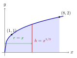
Figure. The region under \(y=\sqrt[3]x\) on \([0,8]\) and the strip at \(x=4\) (radius \(4\), height \(4^{1/3}\approx1.59\)).
Example 6.4.19: A sine of \(2x^2\)
The region under \(y=\sin(2x^2)\) for \(0\le x\le\frac{\sqrt\pi}2\) is revolved about the \(y\)-axis. Find the volume.
Solution. On this interval \(2x^2\) runs from \(0\) to \(\frac\pi2\), so \(\sin(2x^2)\ge0\) and the region lies above the axis. The strip at \(x\) has radius \(x\) and height \(\sin(2x^2)\):
Substitution. Let \(u=2x^2\), so \(du=4x\,dx\) and \(x\,dx=\frac14du\). At \(x=0\), \(u=0\); at \(x=\frac{\sqrt\pi}2\), \(u=2\cdot\frac\pi4=\frac\pi2\). Then
Check. The height is at most \(1\) and the radius at most \(\frac{\sqrt\pi}2\approx0.886\), so the solid lies inside a cylinder of volume \(\pi\cdot\frac\pi4\cdot1\approx2.47\), and \(1.571<2.47\).
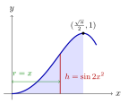
Figure. The region under \(y=\sin(2x^2)\) on \([0,\frac{\sqrt\pi}2]\); the curve reaches height \(1\) at the right end.
Group 2: Shells about the \(x\)-axis¶
Example 6.4.20: A parabola opening sideways
Let \(R\) be the region between the \(y\)-axis and the curve \(x=4y-y^2\). Find the volume of the solid obtained by revolving \(R\) about the \(x\)-axis.
Solution. The curve meets \(x=0\) where \(y(4-y)=0\), so \(0\le y\le4\), and \(x=4y-y^2\ge0\) there. The strip at height \(y\) is horizontal (parallel to the axis), of length \(h=4y-y^2\), at distance \(r=y\) from the axis:
Check by washers. For \(0\le x\le4\) the region at \(x\) runs in \(y\) from \(2-\sqrt{4-x}\) to \(2+\sqrt{4-x}\) (solve \(y^2-4y+x=0\)), so the washer has \(R_{\mathrm{out}}^2-R_{\mathrm{in}}^2=(2+s)^2-(2-s)^2=8s\) with \(s=\sqrt{4-x}\), and \(V=8\pi\int_0^4\sqrt{4-x}\,dx=8\pi\cdot\frac23\cdot8=\frac{128\pi}3\).
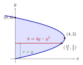
Figure. The region between the \(y\)-axis and \(x=4y-y^2\) (the vertex is at \((4,2)\)). The strip at \(y=\frac32\) has length \(\frac{15}4\) and radius \(\frac32\).
Example 6.4.21: Where washers need two pieces
Let \(R\) be the region bounded by the \(y\)-axis, the curve \(x=\frac1y\), and the lines \(y=1\) and \(y=3\). Find the volume of the solid obtained by revolving \(R\) about the \(x\)-axis.
Solution. The strip at height \(y\), \(1\le y\le3\), runs from \(x=0\) to \(x=\frac1y\), so \(h=\frac1y\) and \(r=y\), and \(r\,h=1\):
Check by washers. Slicing perpendicular to the axis, at \(x\) the region has \(1\le y\le3\) if \(0\le x\le\frac13\) (the curve \(y=\frac1x\ge3\)), and \(1\le y\le\frac1x\) if \(\frac13\le x\le1\). So two integrals are needed: \(V=\pi\int_0^{1/3}(9-1)\,dx+\pi\int_{1/3}^1\Bigl(\frac1{x^2}-1\Bigr)dx=\frac{8\pi}3+\pi\Bigl[-\frac1x-x\Bigr]_{1/3}^1=\frac{8\pi}3+\frac{4\pi}3=4\pi\).
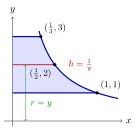
Figure. The region bounded by \(x=\frac1y\), the \(y\)-axis, \(y=1\) and \(y=3\). The strip at \(y=2\) has length \(\frac12\) and radius \(2\).
Group 3: Shells about other vertical lines¶
Example 6.4.22: Between a line and a parabola, about \(x=2\)
The region between \(y=x\) and \(y=x^2\) is revolved about the line \(x=2\). Find the volume.
Solution. The curves meet at \(x=0\) and \(x=1\), and \(x>x^2\) on \((0,1)\), so the strip at \(x\) has height \(h=x-x^2\). The axis \(x=2\) is to the right of the region (\(k=2\ge b=1\)), so the radius is \(r=2-x\):
Check by washers. The strips are now horizontal. At height \(y\in[0,1]\) the region runs from \(x=y\) (the line) to \(x=\sqrt y\) (the parabola). The axis is on the right, so the farther curve is \(x=y\) (distance \(2-y\)) and the nearer is \(x=\sqrt y\) (distance \(2-\sqrt y\)): \(V=\pi\int_0^1\bigl((2-y)^2-(2-\sqrt y)^2\bigr)dy=\pi\int_0^1\bigl(4\sqrt y-5y+y^2\bigr)dy=\pi\bigl(\frac83-\frac52+\frac13\bigr)=\frac\pi2\).
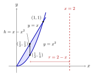
Figure. The region between \(y=x\) and \(y=x^2\) and the axis \(x=2\). The strip at \(x=\frac12\) runs from \((\frac12,\frac14)\) to \((\frac12,\frac12)\), height \(\frac14\), at distance \(2-\frac12=\frac32\) from the axis.
Example 6.4.23: A square root about its right end
The region under \(y=\sqrt{x-1}\) for \(1\le x\le5\) is revolved about the line \(x=5\). Find the volume.
Solution. The axis passes through the right end of the region and is to the right of it (\(k=5\ge b=5\)), so the radius is \(5-x\) and the height is \(\sqrt{x-1}\):
Substitution. Let \(u=x-1\), so \(x=u+1\), \(5-x=4-u\) and \(dx=du\); \(x=1\) gives \(u=0\) and \(x=5\) gives \(u=4\). Then
(Here \(4^{3/2}=8\) and \(4^{5/2}=32\).)
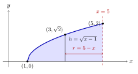
Figure. The region under \(y=\sqrt{x-1}\) and the axis \(x=5\). The strip at \(x=3\) has height \(\sqrt2\) and radius \(2\).
Group 4: Shells about other horizontal lines¶
Example 6.4.24: A region about \(y=2\), checked by washers
Let \(R\) be the region in the first quadrant bounded by the axes and the curve \(x=4-y^2\). Find the volume of the solid obtained by revolving \(R\) about the line \(y=2\).
Solution. The curve meets the \(y\)-axis at \(y=2\), so \(0\le y\le2\), and the strip at height \(y\) runs from \(x=0\) to \(x=4-y^2\): \(h=4-y^2\). The axis \(y=2\) is above the region (\(k=2\ge d=2\)), so the radius is \(2-y\):
Check by washers. The washers are perpendicular to the axis, so they are indexed by \(x\in[0,4]\), and the region at \(x\) is \(0\le y\le\sqrt{4-x}\). About \(y=2\) the outer radius is \(2\) (to \(y=0\)) and the inner radius is \(2-\sqrt{4-x}\) (to the curve): \(V=\pi\int_0^4\Bigl(4-(2-\sqrt{4-x})^2\Bigr)dx=\pi\int_0^4\bigl(4\sqrt{4-x}-(4-x)\bigr)dx=\pi\bigl(\frac{64}3-8\bigr)=\frac{40\pi}3\).
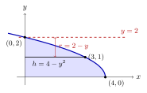
Figure. The region under \(x=4-y^2\) and the axis \(y=2\). The strip at \(y=1\) has length \(3\) and is at distance \(1\) from the axis.
Example 6.4.25: A parabola and a line, about \(y=-1\)
Let \(R\) be the region bounded by \(x=y^2\), \(x=6-y\) and the \(x\)-axis. Find the volume of the solid obtained by revolving \(R\) about the line \(y=-1\).
Solution. Intersection. \(y^2=6-y\) gives \(y^2+y-6=(y+3)(y-2)=0\), so \(y=2\) in the first quadrant, at \((4,2)\). For \(0\le y\le2\) the line \(x=6-y\) is to the right of the parabola \(x=y^2\) (at \(y=1\): \(5>1\)), so the strip has length \(h=6-y-y^2\). The axis \(y=-1\) is below the region (\(k=-1\le c=0\)), so \(r=y+1\):
Check by washers. Slicing by \(x\): for \(0\le x\le4\) the region is \(0\le y\le\sqrt x\) and for \(4\le x\le6\) it is \(0\le y\le6-x\); about \(y=-1\) the inner radius is \(1\) and the outer radius is \(y_{\max}+1\). So \(V=\pi\int_0^4\bigl(x+2\sqrt x\bigr)dx+\pi\int_4^6\bigl(x^2-14x+48\bigr)dx=\pi\bigl(8+\frac{32}3\bigr)+\pi\Bigl[\frac{x^3}3-7x^2+48x\Bigr]_4^6=\frac{56\pi}3+\frac{20\pi}3=\frac{76\pi}3\).
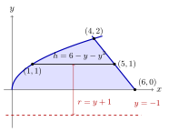
Figure. The region bounded by \(x=y^2\), \(x=6-y\) and the \(x\)-axis (the corner is \((4,2)\)) and the axis \(y=-1\). The strip at \(y=1\) runs from \((1,1)\) to \((5,1)\) (length \(4=6-1-1\)) at distance \(2\) from the axis.
Group 5: Choosing the method¶
Example 6.4.26: The parabola \(y=1-x^2\) about the \(x\)-axis, both ways
Let \(R\) be the region in the first quadrant under \(y=1-x^2\). Find the volume of the solid obtained by revolving \(R\) about the \(x\)-axis, by disks and by shells.
Solution. Disks (strips perpendicular to the axis, \(dx\)): the disk at \(x\in[0,1]\) has radius \(1-x^2\), so
Shells (strips parallel to the axis, \(dy\)): write \(x=\sqrt{1-y}\) for \(0\le y\le1\). The strip at height \(y\) runs from \(x=0\) to \(x=\sqrt{1-y}\), so \(h=\sqrt{1-y}\) and \(r=y\). With \(u=1-y\), \(y=1-u\), \(dy=-du\) (\(y=0\mapsto u=1\), \(y=1\mapsto u=0\)):
Both agree. Disks are easier here: the curve is already \(y=f(x)\) and the axis is horizontal (Procedure 6.4.12).
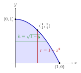
Figure. The region under \(y=1-x^2\). The red strip at \(x=\frac12\) is perpendicular to the axis (a disk); the green strip at \(y=\frac12\) is parallel to it (a shell).
Example 6.4.27: Which axis gives the larger solid?
The region under \(y=\sqrt x\) for \(0\le x\le4\) is revolved about the \(x\)-axis, and also about the \(y\)-axis. Which solid has the larger volume?
Solution. About the \(x\)-axis (disks, radius \(\sqrt x\)): \(V_x=\pi\int_0^4x\,dx=\pi\bigl[\frac{x^2}2\bigr]_0^4=8\pi\approx25.13\). About the \(y\)-axis (shells, \(r=x\), \(h=\sqrt x\)): \(V_y=2\pi\int_0^4x^{3/2}dx=2\pi\Bigl[\frac25x^{5/2}\Bigr]_0^4=2\pi\cdot\frac{64}5=\frac{128\pi}5\approx80.42\). The solid about the \(y\)-axis is \(\frac{128}{5}\div8=3.2\) times as large. Why: most of the area lies far from the \(y\)-axis (the region is long in \(x\) and short in \(y\)), and the volume grows with the distance travelled.
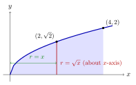
Figure. The region under \(y=\sqrt x\) on \([0,4]\). About the \(x\)-axis the strip at \(x=2\) has radius \(\sqrt2\) (disk); about the \(y\)-axis it has radius \(2\) (shell).
Group 6: Drilled solids¶
Example 6.4.28: The napkin ring
A cylindrical hole is drilled through the centre of a ball of radius \(R\), leaving a ring of height \(H=2\sqrt{R^2-a^2}\), where \(a\) is the radius of the hole. Show that the volume of the ring is \(\frac{\pi}6H^3\), whatever \(R\) is, and find it for \(H=6\).
Solution. The ring is obtained by revolving about the \(y\)-axis the region \(a\le x\le R\), \(|y|\le\sqrt{R^2-x^2}\). The strip at \(x\) has radius \(x\) and height \(2\sqrt{R^2-x^2}\). With \(u=R^2-x^2\), \(du=-2x\,dx\) (\(x=a\mapsto u=R^2-a^2\), \(x=R\mapsto u=0\)):
since \(\sqrt{R^2-a^2}=\frac H2\). For \(H=6\): \(V=\frac{\pi\cdot216}6=36\pi\approx113.1\), for every \(R\ge3\). (Check: \(R=5\) gives \(a=4\) and \(\frac{4\pi}3\cdot27=36\pi\); \(R=10\) gives \(a^2=91\) and \(\frac{4\pi}3\cdot9^{3/2}=36\pi\).)
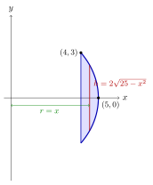
Figure. The region for \(R=5\), \(a=4\) (the hole): the part of the half-disk with \(x\ge4\). Its height is \(6=H\) at \(x=4\).
Example 6.4.29: How wide a hole removes half of a ball?
A cylindrical hole is drilled through the centre of a ball of radius \(1\). For which hole radius \(a\) is exactly half of the ball’s volume removed?
Solution. What remains is the ring of Example 6.4.28 with \(R=1\): \(V_{\mathrm{ring}}=\frac{4\pi}3(1-a^2)^{3/2}\). The ball has volume \(\frac{4\pi}3\), and half of it must remain, so \((1-a^2)^{3/2}=\frac12\). Raise to the power \(\frac23\): \(1-a^2=2^{-2/3}\), so
(The hole has about \(61\%\) of the radius of the ball but removes half of its volume.) Check. For \(a=0.608\): \((1-0.3697)^{3/2}=0.6303^{1.5}\approx0.500\).
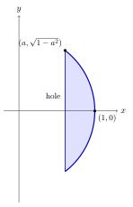
Figure. The half-disk of radius \(1\) with the hole \(0\le x\le a\approx0.608\) removed; the remaining region is revolved about the \(y\)-axis.
Group 7: Proofs¶
Example 6.4.30: The volume of a cone by shells
Prove that a cone of base radius \(r\) and height \(h\) has volume \(\frac13\pi r^2h\), using Theorem 6.4.2.
Proof. The cone is the solid obtained by revolving about the \(y\)-axis the triangle under the line \(y=h\bigl(1-\frac xr\bigr)\) for \(0\le x\le r\) (it has height \(h\) at \(x=0\) and height \(0\) at \(x=r\)). Here \(f\ge0\) and \(0\le a=0<b=r\), so Theorem 6.4.2 applies with \(f(x)=h\bigl(1-\frac xr\bigr)\):
This agrees with Theorem 6.3.18(1), which was proved by disks. ◻ ∎
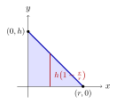
Figure. The triangle under \(y=h(1-x/r)\) that generates the cone.
Example 6.4.31: Volume is linear in the distance to the axis
Let \(R\) be the region between the graphs of \(g\le f\) on \([a,b]\), with \(0\le a<b\), and let \(A=\int_a^b(f-g)\,dx\) be its area. For \(0\le k\le a\) let \(V(k)\) be the volume obtained by revolving \(R\) about the line \(x=k\). Prove that \(V(k)=V(0)-2\pi kA\). Then find \(V(k)\) for the rectangle \(1\le x\le3\), \(0\le y\le1\).
Proof. By Theorem 6.4.9 (case \(k\le a\), with \(x-k\ge0\) on \([a,b]\)),
by splitting the integrand and taking the constant \(2\pi k\) out of the integral. So \(V\) is a linear function of \(k\) with slope \(-2\pi A\). (Equivalently \(V(k)=2\pi A(\bar x-k)\) with \(\bar x=\frac1A\int_a^bx(f-g)\,dx\), the \(x\)-coordinate of the centre of mass of \(R\), as in the theorem of Pappus mentioned above.) ◻ ∎
The rectangle. Here \(f-g=1\), \(A=2\) and \(V(0)=2\pi\int_1^3x\,dx=2\pi\cdot4=8\pi\), so \(V(k)=8\pi-4\pi k\) for \(0\le k\le1\). Check at \(k=1\): \(2\pi\int_1^3(x-1)\,dx=2\pi\cdot2=4\pi=8\pi-4\pi\).
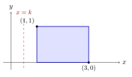
Figure. The rectangle \(1\le x\le3\), \(0\le y\le1\) and a vertical axis \(x=k\) to its left; moving the axis to the right by \(1\) lowers the volume by \(2\pi A=4\pi\).
Answers and discussion¶
Knowledge Check 6.4.1. The estimate is \(2\pi\cdot3\cdot5\cdot0.01=0.3\pi\approx0.942\). The exact tube volume is \(\pi(3.005^2-2.995^2)\cdot5=\pi\cdot0.06\cdot5=0.3\pi\): the same, because \(3\) is exactly the average of the two radii and \(3.005^2-2.995^2=(3.005+2.995)(0.01)=0.06\).
Knowledge Check 6.4.2. The strip at \(x\) has radius \(x\) and height \(x^2\), so \(V=2\pi\int_0^1x\cdot x^2\,dx=2\pi\bigl[\frac{x^4}4\bigr]_0^1=\frac\pi2\).
Knowledge Check 6.4.3. The axis \(x=5\) is to the right of the region, so \(r=5-x\) and \(h=x\): \(V=2\pi\int_1^3(5-x)x\,dx=2\pi\bigl[\frac52x^2-\frac13x^3\bigr]_1^3=2\pi\bigl(\frac{27}2-\frac{13}6\bigr)=\frac{68\pi}3\approx71.2\).